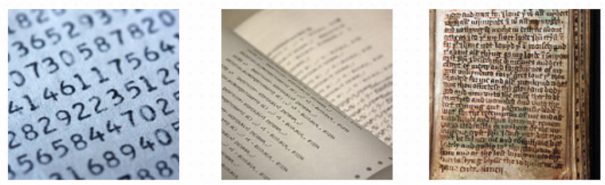
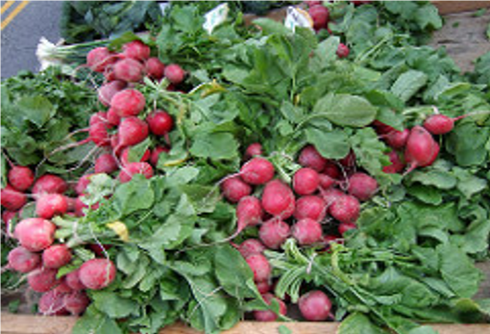

Code
a, b, c = [1, 2, 3]
print(b)
print(a)This activity was recovered from python/python_data_files.ipynb. Its code is preserved but is not executed during the public book build, so readers can inspect it without requiring legacy package versions. Download the source notebook to run and modernize it interactively.

In this lecture, we discuss some of the basic techniques in Python for file processing, especially when accessing data in text files.
A text file is any file containing only readable characters: - Characters being letters, numbers… - As well as other symbols and exotic symbols - English and other languages

A text file may letters, numbers, and other symbols, in English or other languages.
In a text file:
Symbols can have special meanings, e.g. math $ A = r^2$
Code in special syntax, e.g. HTML code
Writing/data in various structures, e.g. text in paragraphs or tables:
| Column 1 | Column 2 | Column 3 |
|---|---|---|
| … | … | … |
| … | … | … |
A scientific article is an example of a text file, where you may encounter math equations and symbols with special meanings. It may be a web page with HTML code, which follows a special syntax defined by the W3 consortium. It may contain descriptions in paragraphs and data in tabulated structures.
Text files can be viewed and edited by any text editor, e.g. Notepad on PC, TextEdit on Mac, and vi on Linux/Unix, etc. But binary files require special software to access them.
In this lecture, we focus on processing text files.
f = open("months.txt")
print(f.read())The example reads the entire content of a file. The open function creates a file object (a way of getting at the contents of the file), which is then stored in the variable f. f.read() tells the file object to read the full contents of the file, and return it as a string.
f = open("months.txt")
next = f.read(1)
while next != "":
print(next)
next = f.read(1)The example here reads a file a character at a time. This calls the read() function with parameter value 1, which specifies the maximum number of characters to read from the file. When it reaches the end of the file, the f.read() returns an empty “” and ends the while loop.
f = open("months.txt")
next = f.readline()
while next != "":
print(next)
next = f.readlineIt is very common to read a file one text line at a time. Here the code calls the readline() function to read a line at a time. When it reaches the end of file, readline() returns an empty “” and terminates the loop.
f = open("months.txt")
for month in f.readlines():
print("Month " + month.strip())Another alterantive, shown here, is to read a file and load all text lines: - The readlines() method reads all the lines in a file and returns them as a Python list. - You can create a loop to go through the list of lines: - The strip() method removes leading and trailing characters, i.e. spaces by default.
f = open("awesomenewfile.txt", "w")r to readw to write (overwrite)w+ to write (and create if file does not exist)a to appendWith the option “w”, you can open a file to write. All existing content in the files will be overwritten. If you only want to add new lines to the existing content, use option a to append. w+ create the file if it does not exist yet. r is the default option to read from a file.
f = open("names.txt", "w+")
f.print(“John”)
f.write(“Luke\n”)
f.write(“Matt\n”)
f.close()It is a good practice to close the file in the end with the close() method. The print method writes the text and adds a new line character at the end by default. The write() does not do that by default so if you need a new line character and you have to include the \n (newline character) manually.
Here are a few more examples to recap what we have discussed.
To open a text file:
fh = open("hello.txt", "r")To read the entire content of a text file:
fh = open("hello.txt","r")
print fh.read()To read one line at a time:
fh = open("hello.txt", "r")
print fh.readline()To read a list of lines:
fh = open("hello.txt.", "r")
print fh.readlines()To write a text line to a file, and replace its existing content:
fh = open("hello.txt","w")
write("Hello World")
fh.close()To write mutliple text lines to a file:
fh = open("hello.txt", "w")
lines_of_text = ["a line of text", "another line of text", "a third line"]
fh.writelines(lines_of_text)
fh.close()To append a text file to a file:
fh = open("hello.txt", "a")
write("Hello World again")
fh.closeAnd finally, to close a file after you are done with it:
fh = open("hello.txt", "r")
print fh.read()
fh.close()Now that we can read/write text files, there are a lot we can do to process data in the text.

In radishsurvey.txt:
Evie Pulsford - April Cross
Matilda Condon - April Cross
Samantha Mansell - Champion
geronima trevisani - cherry belle
Alexandra Shoebridge - Snow Belle
...The example here is a survey about the types of radish people like. In this survey data of radish votes, each vote is recorded in the format of:
Name of Person followed by the Name of Radish
with a - to separate the two.
for line in open("radishsurvey.txt"):
line = line.strip()
parts = line.split(" - ")
name = parts[0]
vote = parts[1]
print(name + " voted for " + vote)First, we read the file one line at a time with a for loop.
The strip() method removes leading and trailing spaces in a text line, and then we split() the text line into a list of two parts, name and radish, using the delimiter -.
In Python, you can assign a list of values to multiple variables:
a, b, c = [1, 2, 3]
print(b)
print(a)When you split something into a list in Python, you can assign the result directly to multiple variables:
name, cheese, cracker = "Fred,Jarlsberg,Rye".split(",")
print(cheese)print("Counting votes for White Icicle...")
count = 0
for line in open("radishsurvey.txt"):
line = line.strip()
name, vote = line.split(" - ")
if vote == "White Icicle":
count = count + 1
print(count)Back to the radish survey.
The code here counts the number of votes for a specific radish such as White Icicle. It initializes the count as 0, goes through every vote line in the data, and, whenever there is a match, adds 1 to the count.
This does the job well. However, if you want to count different kinds of radish, the code is not very reusable.
def count_votes(radish):
print("Counting votes for " + radish + "...")
count = 0
for line in open("radishsurvey.txt"):
line = line.strip()
name, vote = line.split(" - ")
if vote == radish:
count = count + 1
return count
print(count_votes("White Icicle"))
print(count_votes("Daikon"))
print(count_votes("Sicily Giant"))We can put the code into a function called count_votes(), with a radish parameter to tell the function what to count on when we call it. Now the function can be called to count different radish types.
Still, calling the function requires your knowledge of what radish might have been voted for in the survey. To make the vote-counting task easier, perhaps it is better to count all the votes in the survey and whatever radish appears in the survey will be included in the final counts.
One specific data structure we will be using is dictionary, which will help us keep track of radish names (as keys) and their counts (as values).
# create an empty dictionary
counts = {}
# go through the survey and add counts for each radish
for line in open("radishsurvey.txt"):
line = line.strip()
name, vote = line.split(" - ")
if vote not in counts:
# Initial value for a radish, if it is in the count yet
counts[vote] = 1
else:
# Increment the vote count
counts[vote] = counts[vote] + 1
print(counts) First, in line 2, we create an empty dictionary to keep track of votes.
Then, starting in line 5, it goes through the survey and adds 1 to a count associated with each type of radish.
If the radish has not been voted before the current vote, it has not been counted and the key (radish name) is not in the dictionary yet. In this case, as shown in code line 10, we need to add the key and set its initial value to 1.
If the radish has been voted already, simply add 1 to the existing count (line 13).
In the end, we use the print() function to output data in the dictionary structure.
from pprint import pprint
pprint(counts)If the format of the print() output does not look good, you may consider the pprint, or pretty print, module in Python.
for name in counts:
count = counts[name]
print(name + ": " + str(count))Or you may consider rendering the output using the loop.
Problem in the final counts:
Red King: 1
red king: 3
White Icicle: 1
Cherry Belle: 2
daikon: 4
Cherry Belle: 1
...Shown here is an example output of the program we have created.
In the final result of counts, did you notice that capital Red King and lowercase red king, Cherry Belle and Cherry Belle (with two spaces in the middle) are treated as different radishes?
Apparently, when people vote for their favorite radish, they enter the names in slightly format formats. Now that we know about the dirty data, we should unify (normalize) them by removing the extra spaces and converting the strings into the same format – that is, the same capitalization and one space between words.
Insert the code in the loop:
vote = vote.replace(" ", " ").capitalize()Results will look like:
Red king: 4
White icicle: 1
Cherry belle: 3
Daikon: 4
...The code here, inserted after name, vote = line.split(" - "), will replace two spaces with one and capitalize the names. In the end, with this improvement, the different variations of Red King and Cherry Belle will be merged.
s.strip() returns a string with whitespace removed from the start and ends.startswith('other') or s.endswith('other') tests if the string starts or ends with the given other strings.replace('old', 'new') returns a string where all occurrences of ‘old’ have been replaced by ‘new’s.split('delim') returns a list of substrings separated by the given delimiter.s.join(list) opposite of split(), joins the elements in the given list together using the string as the delimiter.In the radish survey example, data are delimited by -. Today, it is very common to encounter data in the CSV format. So let’s take a close look at this format and how to process CSV files with Python.
In coffee.csv:
"Coffee","Water","Milk","Icecream"
"Espresso","No","No","No"
"Long Black","Yes","No","No"
"Flat White","No","Yes","No"
"Cappuccino","No","Yes - Frothy","No"
"Affogato","No","No","Yes"
...In the example here, the first line is the header with the names of data fields. Each text line after that is a data instance, where values are separated by a comma.
Use the Python CSV module to process:
import csv
f=open("coffee.csv")
for row in csv.reader(f):
print(row)The csv.reader() reads a file in the CSV format and returns each row as a list of values. The module takes care of the split of column values so you don’t need to do that again.
import csv
f = open("airports.dat")
for row in csv.reader(f):
print(row[1])Now that the row variable is a list of values, you can access each value using the index. row[1], for example, returns the value of the second column or field.
import csv
f = open("airports.dat")
for row in csv.reader(f):
if row[3] == "Australia" or row[3] == "Russia":
print(row[1])import csv
with open('name.csv') as csvfile:
reader = csv.DictReader(csvfile)
for row in reader:
print(row['first_name'], row['last_name'])We noticed earlier that a CSV usually provides the header with the names of the fields.
When there are many fields in the data, it is easier to use names instead of a numeric index to access the corresponding value.
With DictReader and DictWriter, you can access data in the CSV using column names in the header.
import csv
ifile = open('test.csv', "rb")
reader = csv.reader(ifile)
ofile = open('ttest.csv', "wb")
writer = csv.writer(ofile, delimiter='', quotechar='"', quoting=csv.QUOTE_ALL)
for row in reader:
writer.writerow(row)
ifile.close()
ofile.close()Because CSV format is a plain text format that uses comma as the delimiter, you can simply open a file and write to it using the comma-delimited style.
To make sure data are written consistently according to the format, especially if you have special characters such as comma in the data, you may consider using the csv.writer().
There are other commonly used formats such as JSON and XML, and we will discuss them in another lecture.
import pandas as pd
iris_filename = 'datasets-uci-iris.csv'
iris = pd.read_csv(iris_filename, sep=',', decimal='.',
header=None, names= ['sepal_length', 'sepal_width',
'petal_length', 'petal_width’,
'target']
)Besides basic file read/write, Python has a wide range of tools and packages for loading, cleaning, and preprocessing data. Pandas, for example, is a very powerful library for data analysis and manipulation; along with NumPy, which makes it easier to compute data in vectors and multi-dimensional arrays, and SciPy for scientific computing.
Chapter 2 ## Working with Data, of Hector Cuesta (2013). Practical Data Analysis. https://ebookcentral-proquest-com.ezproxy2.library.drexel.edu/lib/drexel-ebooks/detail.action?docID=1507840
Working with Text Files:
http://opentechschool.github.io/python-data-intro/core/text-files.html
https://www.tutorialspoint.com/python/python_files_io.htm
https://www.guru99.com/reading-and-writing-files-in-python.html
Working with strings: —
http://opentechschool.github.io/python-data-intro/core/strings.html
CSV files:
https://code.tutsplus.com/tutorials/how-to-read-and-write-csv-files-in-python--cms-29907
http://opentechschool.github.io/python-data-intro/core/strings.html